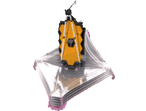
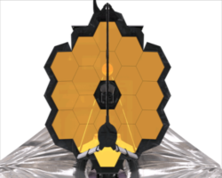
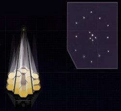

- #1
- #2
- #3
- #4
- #5
- #6
- #7
- #8
- #9
- #10
- #11
- #12
- #13
- #14
- #15
- #16
- #17
- #18
- #19
- #20
- #21
- #22
- #23
- #24
- #25
- #26
- #27
- #28
- #29
- #30
- #31
- #32
- #33
- #34
- #35
- #36
- #37
- #38
- #39
-
Preparando Para O Lançamento
Webb foi colocado no foguete Ariane 5 na configuração compactada mostrada e encapsulada na carenagem do nariz. Para o lançamento, o Webb é lançado na plataforma de lançamento e a contagem regressiva começa. Em sua jornada de aproximadamente 1.000.000 milhas para L2, o Webb se 'desdobrará' passando por várias implantações para atingir sua configuração operacional.
-
Decolar!
O veículo de lançamento Ariane 5 fornece impulso por aproximadamente 26 minutos após a decolagem da Guiana Francesa. Os primeiros estágios disparam, consomem seu combustível, cortam e separam.
-
Separação Do Estágio Superior
Finalmente, o estágio 'superior' dispara, dando a Webb seu empurrão final para cima e para longe da gravidade da Terra e em uma trajetória em direção à sua órbita L2. O motor do estágio superior completa sua queima, corte e separação. Webb é liberado do Ariane 5 e está voando sozinho em um estado totalmente retraído.
-
MCC1a
O Telescópio Espacial James Webb é lançado em um caminho direto para uma órbita ao redor do segundo Ponto Lagrange Sol-Terra (L2), mas precisa fazer suas próprias manobras de correção de empuxo no meio do curso para chegar lá. Isso é planejado, porque se o Webb receber muito impulso do foguete Ariane, ele não poderá se virar para voltar à Terra, porque isso exporia diretamente a estrutura e a ótica do telescópio ao Sol, superaquecendo-os e abortando a missão científica antes. pode até começar.
-
Montagem De Antena Gimbalizada
O Gimbaled Antenna Assembly (GAA) contém a antena de alta taxa do Webb. Ele é girado para sua posição estacionada apontada de volta para a Terra. Esta é uma implantação 'automática', assim como o painel solar que a precedeu. Todas as outras implantações serão controladas por comandos do solo.
-
MCC1b
Existem três manobras de correção de curso intermediário: MCC-1a, MCC-1b e MCC-2. A segunda, MCC-1b, é uma queima mais curta realizada antes do início da implantação do protetor solar. A manobra final, MCC-2, realizada 29 dias após o lançamento, foi projetada para inserir Webb na órbita ideal em torno de L2.
-
Palete Protetor Solar Dianteiro
O no-break suporta e transporta as cinco membranas de proteção solar dobradas. Antes disso, a espaçonave é manobrada para fornecer temperaturas mais quentes no UPS dianteiro e vários aquecedores são ativados para aquecer os principais componentes de implantação. Os dispositivos de liberação de chave são ativados. Vários componentes eletrônicos e software são configurados antes de suportar os movimentos do UPS, que são acionados por um motor. Esta etapa representa o início da fase de implantação do Sunshield e o início de todas as principais implantações.
-
Palete Protetor Solar Traseiro
Os dispositivos de liberação de chave foram ativados. Vários componentes eletrônicos e software também foram configurados antes de suportar os movimentos do UPS, que são acionados por um motor.
-
Flap Momentum À Ré
O Aft Momentum Flap é usado para ajudar a compensar parte da pressão solar que incide sobre o grande protetor solar. O uso do flap de impulso ajuda a minimizar o uso de combustível durante a missão. Depois de liberar os dispositivos de retenção, uma mola impulsiona a rotação do flap traseiro para sua posição final.
-

Liberação De Capas De Proteção Solar
Esta operação libera e enrola a tampa da membrana protetora. A tampa de liberação do protetor solar protege as membranas durante as atividades de solo e lançamento. Os dispositivos de liberação são ativados eletricamente para liberar as tampas.
-
Protetor Solar BOMBA Mid-Boom
As etapas de implantação da lança intermediária da porta +J2 incluem a conclusão do enrolamento da cobertura do protetor solar, a equipe de implantações estende a lança intermediária +J2 junto com o lado +J2 das cinco membranas. Esta operação é uma implantação acionada por motor.
-
Protetor Solar STARBOARD Mid-Boom
As etapas de implantação da lança intermediária de estibordo (-J2) incluem a conclusão do enrolamento da cobertura do protetor solar, a equipe de implantações estende a lança intermediária -J2 junto com o lado -J2 das cinco membranas de proteção solar. Esta operação é uma implantação acionada por motor.
-
Tensionamento Da Camada De Proteção Solar Em Andamento
O tensionamento de todas as 5 camadas do protetor solar está completo, o que coloca o protetor solar em seu estado totalmente implantado. As temperaturas no lado do sol/quente do protetor solar atingirão um máximo de aproximadamente 383 K ou aproximadamente 230 graus F e no lado frio do espelho/instrumentos do protetor solar, um mínimo de aproximadamente 36 K ou cerca de -394 graus F. Devido à engenharia do protetor solar, essa incrível transição ocorre em uma distância de aproximadamente um metro e oitenta.
-

A Implantação Do Espelho Secundário Começa
Inicia a operação para a implantação da Estrutura de Suporte do Espelho Secundário (SMSS) de sua posição de lançamento para sua posição operacional. À medida que é implantado, suas longas hastes balançarão o espelho secundário na frente do espelho primário. O espelho secundário desempenha um papel importante ao refletir a luz do espelho primário para onde os instrumentos ficam, atrás do espelho primário.
-
Implantação De Espelho Secundário Concluída
Estrutura de suporte com mais de 7 metros de comprimento. O espelho secundário do Webb está no final da estrutura de suporte do espelho secundário (SMSS). O espelho secundário desempenha um papel importante ao refletir a luz do espelho primário para onde os instrumentos ficam, atrás do espelho primário.
-
Radiador De Instrumentos Implantado Na Popa
Esta atividade libera o último dos quatro bloqueios de lançamento que mantém o radiador de instrumento implantado na popa (ADIR) em sua configuração de lançamento. A liberação do último dispositivo permite que as molas conduzam o ADIR para sua posição final de desdobramento.
-
A Asa Do Espelho Primário De Bombordo Começa
A equipe de implantação inicia o planejamento e as operações para a implantação da asa de espelho primária esquerda/bombordo (+V2) de sua posição retraída/lançamento para sua posição operacional. Esta operação abre e trava a asa +V2 do espelho primário. Cada asa contém três dos 18 segmentos de espelho. Esta é uma implantação acionada por motor.
-
Começa A Asa Do Espelho Primário De Estibordo
A equipe de implantação inicia o planejamento e as operações para implantar a asa direita/estibordo (-V2) do espelho primário de sua posição retraída/de lançamento para sua posição operacional. Cada asa contém 3 dos 18 segmentos de espelho. Esta é uma implantação acionada por motor.
-

O WEBB ESTÁ TOTALMENTE IMPLANTADO!
O maior e mais complexo telescópio já lançado no espaço está totalmente implantado.
Ele estudará todas as fases da história do nosso Universo, desde os primeiros brilhos luminosos após o Big Bang, até a formação de sistemas solares capazes de sustentar a vida em planetas como a Terra, até a evolução do nosso próprio Sistema Solar.
-

Movimentos De Segmentos De Espelho Individuais
É uma operação de várias etapas para ativar e mover cada um dos 18 segmentos do espelho primário e secundário de sua configuração de lançamento retraída para uma posição desdobrada pronta para alinhamento. Depois que todas as implantações de segmentos de espelho individuais são concluídas, o processo de alinhamento de espelho óptico detalhado começa. Paralelamente, à medida que as temperaturas esfriam o suficiente, as equipes de instrumentos ligam seus instrumentos e iniciam o processo de comissionamento de cada instrumento.
-
Rastreador De Implantação De Segmento Espelhado
Cada segmento de espelho primário possui um ID que consiste em uma letra (A,B,C) seguida por um número e do espelho secundário (SM) à medida que eles se movem 12,5 mm de sua posição de lançamento para processo de alinhamento do espelho. Eles se movem aproximadamente 1 mm por dia cada.
-
Queimadura De Inserção L2
O diagrama adjacente mostra uma visão conceitual da trajetória de Webb e da órbita. O Webb foi lançado no lado da Terra voltado para o Sol e percorreu uma trajetória ligeiramente curva por ~ 1.000.000 milhas (~ 1.609.344 km) para entrar em sua órbita L2. Observe também a orientação de Webb, o protetor solar é perpendicular ao Sol, então os espelhos e instrumentos de Webb estão em completa escuridão.
-

Resfriamento Da NIRCam Até o Limite
Quando a NIRCam atingir 120 Kelvin (-153℃), Webb estará pronto para começar a mover os 18 segmentos primários do espelho para formar uma única superfície espelhada. A equipe selecionou a estrela HD 84406 como alvo para iniciar este processo. Será o primeiro objeto que o NIRCam irá registar. O processo criará uma imagem de 18 pontos de luz aleatórios, essa coleção irá formar uma imagem.
-
Etapas Do Processo De Alinhamento De Espelho
Com a implantação dos segmentos do espelho concluída, a equipe iniciou as várias etapas necessárias para preparar e calibrar o telescópio para fazer seu trabalho. O processo de comissionamento do telescópio levará muito por consisttir em 18 segmentos de espelho individuais que precisam trabalhar juntos como uma única superfície óptica de alta precisão.
-
Etapa 1: Identificação Da Imagem Do Segmento
Este marca o primeiro passo para capturar imagens que estão desfocadas e usá-las para ajustar o telescópio. Um por um, os 18 segmentos de espelho são movidos para determinar qual segmento cria qual imagem. Depois de combinar os segmentos do espelho com suas respectivas imagens, podemos inclinar os espelhos para aproximar todas as imagens de um ponto comum para análise posterior. Chamamos esse arranjo de 'matriz de imagens'.
-
Etapa 2: Alinhamento Do Segmento
Depois que as imagens são capturadas é realizado o Segment Alignment, que corrige os grandes erros de posicionamento dos segmentos do espelho. Desfocando as imagens dos segmentos movendo ligeiramente o espelho secundário. Os ajustes dos segmentos resultam em 18 “telescópios” bem corrigidos. No entanto, os segmentos ainda não funcionam juntos como um único espelho.
-

Etapa 3: Empilhamento De Imagens
Para colocar toda a luz em um único lugar, cada imagem de segmento deve ser empilhada uma sobre a outra. Na etapa de empilhamento de imagens, movemos as imagens de segmentos individuais para que caiam precisamente no centro do campo para produzir uma imagem unificada. Este processo prepara o telescópio para faseamento aproximado. O empilhamento é realizado sequencialmente em três grupos (segmentos A, segmentos B e segmentos C).
-
Etapa 4: Faseamento Grosseiro
Os segmentos precisam ser alinhados uns com os outros com uma precisão menor que o comprimento de onda da luz. O Coarse Phasing mede e corrige o deslocamento vertical dos segmentos do espelho. Usando uma tecnologia conhecida como Dispersed Fringe Sensing, usamos NIRCam para capturar espectros de luz de 20 pares separados de segmentos de espelho.
-
Etapa 5: Fase Fina
A fase fina é realizada três vezes, logo após cada rodada da fase grosseira (Etapa 4), em seguida, rotineiramente ao longo da vida do JWST. Essas operações medem e corrigem os erros de alinhamento remanescentes usando o mesmo método de desfocagem aplicado durante o Alinhamento do Segmento(Etapa 2). No entanto, em vez de usar o espelho secundário, usamos elementos ópticos especiais dentro do instrumento científico que introduzem quantidades variáveis de desfocagem para cada imagem.
-
Etapa 6: Alinhamento Do Telescópio Em Todos Os Campos De Visão Do Instrumento
Após a Etapa 5, o telescópio estará bem alinhado em um local no campo de visão da NIRCam. Nesta fase do processo de comissionamento, fazem medições em vários locais, em cada um dos instrumentos científicos. Mais variação na intensidade indica erros maiores naquele ponto de campo. Um algoritmo calcula as correções finais necessárias para obter um telescópio bem alinhado em todos os instrumentos científicos.
-
Resfriamento Final - MIRI
Os instrumentos de infravermelho próximo (NIRCam, NIRSpec, FGS-NIRISS) atingiram sua faixa alvo de 34 a 39 kelvin(entre -239℃ e -234℃). O MIRI carrega detectores que precisam estar a uma temperatura inferior a 7 kelvin(-266℃) para poder detectar fótons de comprimento de onda mais longo. Essa temperatura não é possível no Webb apenas por meios passivos, então o Webb carrega um crioresfriador inovador dedicado a resfriar os detectores do MIRI.
-
Etapa 7: Repetir Alinhamento Para Correção Final
Depois de aplicar a correção do campo de visão (etapa 6), a principal coisa a ser resolvida é a remoção de quaisquer pequenos erros residuais de posicionamento nos segmentos primários do espelho. É feito uma verificação final da qualidade da imagem em cada um dos instrumentos científicos, o processo de detecção e controle da frente de onda estará completo.
-
Verificação Dos Modos Do Instrumento
Cada instrumento tem vários modos de operação. Durante o comissionamento, testamos, calibramos, verificamos e, finalmente, aprovamos cada modo, o que significa que está pronto para operações científicas. A imagem adjacente será atualizada para rastrear as aprovações finais. NOTA: o check-out e as aprovações do modo NÃO ocorrem na ordem listada. Alguns dos modos não serão verificados até o final do comissionamento.
-
Contagem Regressiva: Às primeiras imagens de Webb
As primeiras imagens de alinhamento já demonstraram a nitidez sem precedentes da visão infravermelha do Webb. No entanto, essas novas imagens serão as primeiras em cores e as primeiras a mostrar todas as capacidades científicas do Webb. O primeiro pacote de imagens de materiais destacará os temas científicos que inspiraram a missão.
-
Campo Profundo: SMACS 0723
A imagem mostra o aglomerado de galáxias SMACS 0723 como era há 4,6 bilhões de anos. A massa combinada deste aglomerado de galáxias atua como uma lente gravitacional, ampliando muito mais galáxias distantes atrás dela. A NIRCam de Webb trouxe essas galáxias distantes para um foco nítido, incluindo aglomerados de estrelas e características difusas. Os pesquisadores logo começarão a aprender mais sobre as massas, idades, histórias e composições das galáxias, enquanto Webb procura as primeiras galáxias do universo.
-
Exoplaneta: WASP-96 B
O Telescópio Espacial James Webb da NASA capturou a assinatura distinta da água, juntamente com evidências de nuvens e neblina, na atmosfera em torno de um planeta gigante quente e gasoso orbitando uma estrela distante semelhante ao Sol. A observação, que revela a presença de moléculas de gás específicas com base em pequenas diminuições no brilho de cores precisas de luz, é a mais detalhada de seu tipo até hoje, demonstrando a capacidade sem precedentes de Webb de analisar atmosferas a centenas de anos-luz de distância.
-

Morte Estelar: Nebulosa Planetária NGC 3132
A estrela mais escura no centro desta cena tem enviado anéis de gás e poeira por milhares de anos em todas as direções, e o Telescópio Espacial James Webb revelou pela primeira vez que esta estrela está envolta em poeira. Duas câmeras a bordo do Webb capturaram a imagem mais recente desta nebulosa planetária, catalogada como NGC 3132 e conhecida informalmente como a Nebulosa do Anel do Sul. Está a aproximadamente 2.500 anos-luz de distância.
-

Galáxias Interagindo: Quinteto De Stephan
O Quinteto de Stephan, um agrupamento visual de cinco galáxias, é mais conhecido por ser destaque no filme clássico de férias, "It's a Wonderful Life". O Telescópio Espacial James Webb da NASA revela o Quinteto de Stephan sob uma nova luz. Este enorme mosaico é a maior imagem de Webb até hoje, cobrindo cerca de um quinto do diâmetro da Lua.
-
Região De Formação Estelar: NGC 3324 Na Nebulosa Carina
Chamada de Penhascos Cósmicos, é a borda gasosa dentro de NGC 3324, e os "picos" mais altos nesta imagem têm cerca de 7 anos-luz de altura. A área cavernosa foi esculpida na nebulosa pela intensa radiação ultravioleta e ventos estelares de estrelas jovens extremamente massivas e quentes localizadas no centro da bolha, acima da área mostrada nesta imagem.